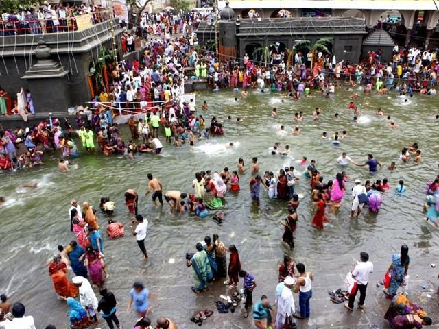
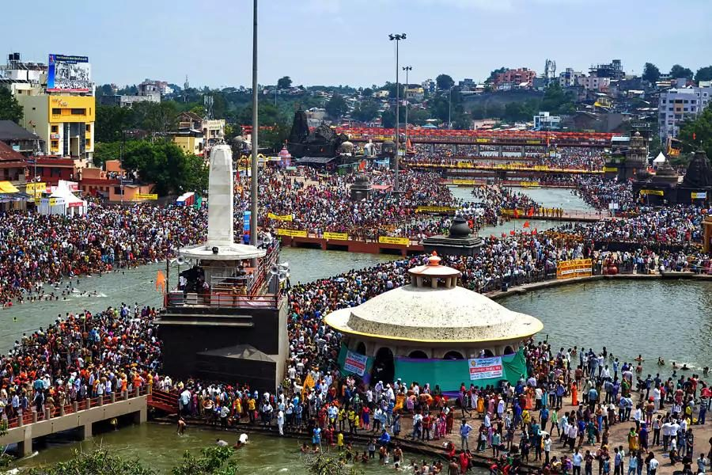
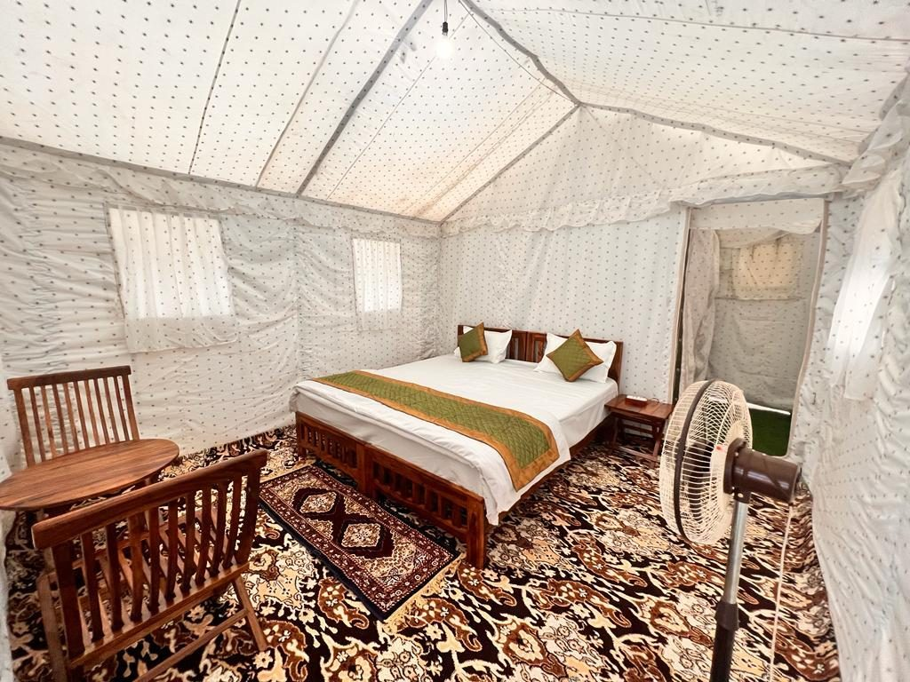
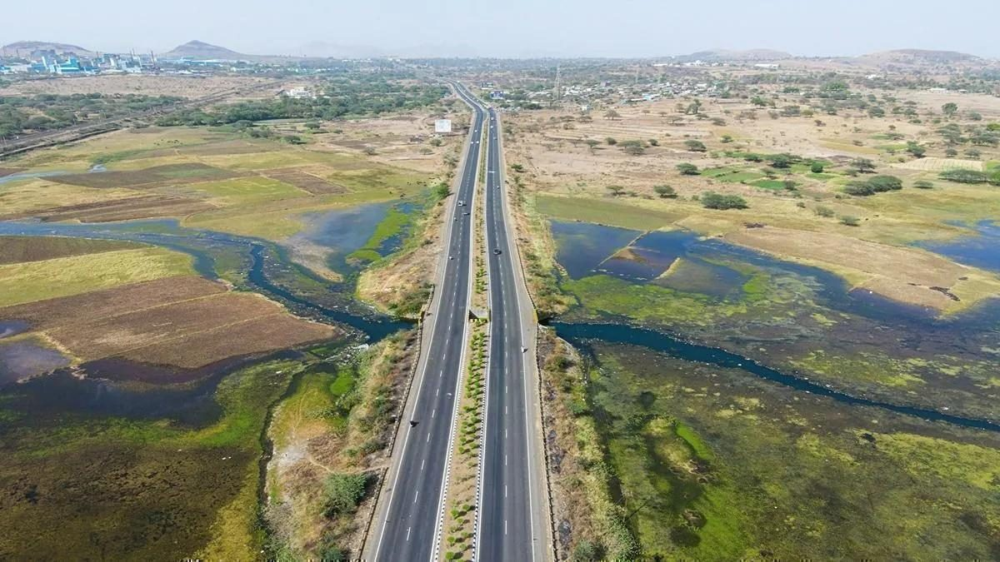
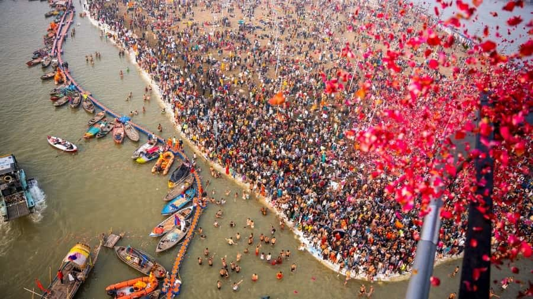

Four things that matter most during Kumbh.

Shahi Snan Timing
We track bathing dates and recommend arrival windows to avoid the heaviest crowd surges at the ghats.

Ghat Access & Routes
Local drivers who know which roads close, which stay open, and how to reach drop points on foot from there.

Tent City & Stay Options
From tent city camps to hotels further from the crowd with a short transfer — matched to your comfort level.

Safe Return Transfers
Pre-agreed pickup points away from the densest zones, so getting back to your vehicle isn't the hard part.

Most Kumbh visitors explore the nearby circuit too.
A short extension turns a pilgrimage trip into a fuller Nashik visit — build it into your Kumbh dates.

Trimbakeshwar
28 km from central Nashik — a natural add-on for pilgrims already in the city.

Shirdi
Around 90 km away, workable as a day trip either side of your Kumbh dates.

Vineyard Country
A quiet, unhurried afternoon a short drive from the ghats — a good reset after crowd days.
Travelling for the Kumbh Mela?
Send your arrival date and group size — we'll come back with a plan that fits around the Shahi Snan schedule, not against it.